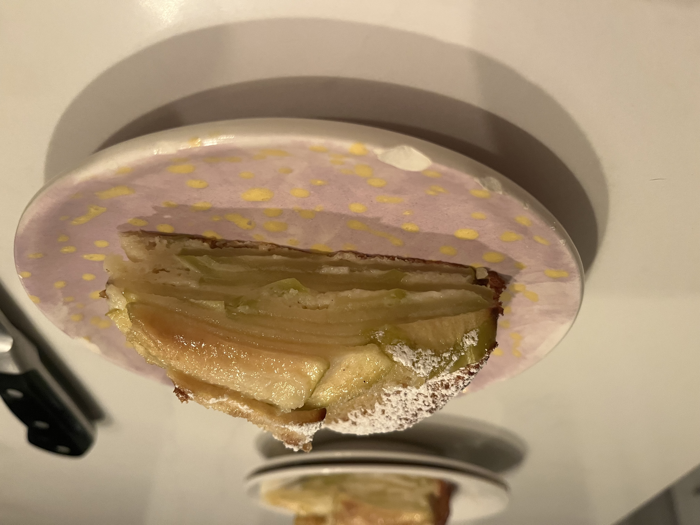
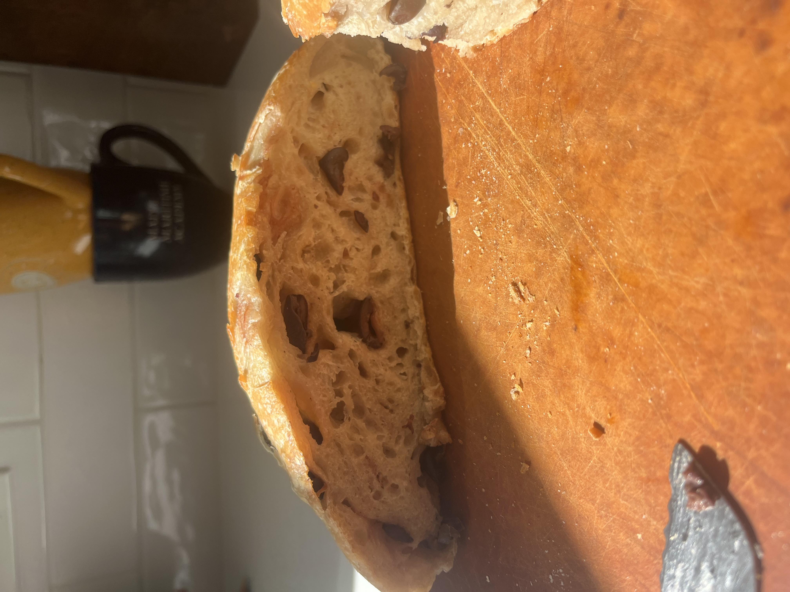

It is officially fall, thus my favorite fruit is once again the star of the show! I had heard of this recipe before, but never made it, and now I can say this will actually be the only apple dessert I ever eat.
Recipe adapted from (here).

[Write a longer caption here — what you made, how it went, what you'd change next time, or the story behind why you made it in the first place.]